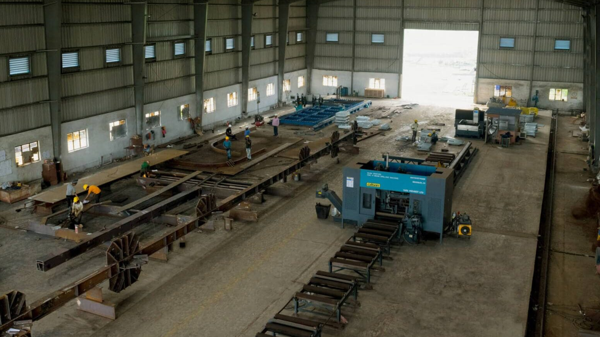

For Farmers
EcoParali provides farmers with advanced machinery and tools for efficient stubble collection and
management, reducing labor and time involved in traditional stubble burning practices. We offer comprehensive training programs
to educate farmers on sustainable stubble management, ensuring they can effectively utilize the provided technologies. By connecting
farmers with industries that require stubble as a raw material, we create new income streams, boosting their financial stability.
Additionally, our solutions help farmers comply with environmental regulations, avoiding penalties associated with stubble burning,
and promoting a safer and more sustainable farming environment.
Stubble Collection and Management:
We provide farmers with advanced machinery and tools for efficient stubble collection and
management. This helps reduce the labor and time involved in traditional stubble burning practices.
Training and Support:
We offer training programs and support to educate farmers on sustainable stubble management
practices. This includes workshops, demonstrations, and hands-on assistance to ensure they can effectively use the provided
tools and technologies.
Additional Income Opportunities:
By connecting farmers with industries that require stubble as raw material, we create new income
streams for them. This not only helps in waste reduction but also boosts their financial stability.
Compliance and Penalty Avoidance:
Our solutions help farmers comply with environmental regulations, avoiding penalties associated
with stubble burning. This promotes a safer and more compliant farming environment.
Log in/Register

For Companies
EcoParali establishes a dependable supply chain by connecting companies with farmers who have surplus stubble. This ensures a
consistent and reliable supply of raw materials for manufacturing biofuels, organic fertilizers, animal bedding, and other eco-friendly
products. We provide quality assurance by monitoring parameters like moisture content, cleanliness, and composition to meet industry
specifications. Our services include logistics and transportation coordination, ensuring efficient delivery of stubble, minimizing delays,
and reducing transportation costs. Additionally, we collaborate with companies on research and development projects to explore new uses
for stubble and innovate sustainable products.
Reliable Supply Chain:
We establish a dependable supply chain by connecting companies with farmers who have surplus stubble. This
ensures a consistent and reliable supply of raw materials for manufacturing biofuels, organic fertilizers, animal bedding, and other
eco-friendly products.
Quality Assurance:
We ensure that the stubble collected and supplied meets the quality standards required by industries.
This includes monitoring parameters like moisture content, cleanliness, and composition to meet industry specifications.
Logistics and Transportation:
Our services include the coordination of logistics and transportation, ensuring that the collected stubble
is efficiently delivered to the companies. This minimizes delays and reduces transportation costs.
Research and Development Collaboration:
We collaborate with companies on research and development projects to explore new uses for stubble and
innovate sustainable products. This partnership fosters innovation and promotes the use of agricultural waste in various industrial applications.
Log in to Buy/Sell
For Government
EcoParali offers comprehensive environmental monitoring services that track air quality, soil health, and other ecological parameters,
helping the government assess the impact of stubble burning and the effectiveness of mitigation strategies. We aid in the implementation
of government policies aimed at reducing stubble burning by providing practical solutions and facilitating stakeholder engagement. Our
platform promotes sustainable agricultural practices, contributing to national sustainability targets and enhancing rural development.
By supporting policy adherence and environmental goals, we help the government ensure a greener and healthier future.
Environmental Monitoring and Reporting:
We provide comprehensive environmental monitoring services that track air quality, soil health, and other
ecological parameters. This data helps the government in assessing the impact of stubble burning and the effectiveness of mitigation strategies.
Policy Support and Implementation:
Our platform aids in the implementation of government policies aimed at reducing stubble burning. By providing
practical solutions and facilitating stakeholder engagement, we support policy adherence and environmental goals.
Sustainable Agricultural Practices Promotion:
We work with government agencies to promote sustainable agricultural practices, thereby contributing to
national sustainability targets and enhancing rural development.
Explore Policies
For Eco-Friendly Enthusiasts
EcoParali provides a marketplace where consumers can easily purchase eco-friendly products made from stubble, such as biofuels,
organic fertilizers, and animal bedding. Our user-friendly online platform allows consumers to browse and buy products conveniently,
with detailed descriptions, customer reviews, and secure payment options. By purchasing products made from stubble, consumers
contribute to sustainable agricultural practices and environmental conservation, supporting farmers and reducing reliance on non-renewable
resources. We also provide educational resources to help consumers understand the positive impact of their purchases on the environment.
Access to Eco-Friendly Products:
EcoParali provides a marketplace on our platform where consumers can easily purchase eco-friendly products
made from stubble. These products include biofuels, organic fertilizers, animal bedding, and other sustainable items.
Online Shopping Platform:
Our user-friendly online platform allows consumers to browse and buy eco-friendly products conveniently.
Detailed product descriptions, customer reviews, and secure payment options make the shopping experience seamless and trustworthy.
Support for Sustainability:
By purchasing products made from stubble, consumers contribute to sustainable agricultural practices and
environmental conservation. Every purchase supports farmers and helps reduce the reliance on non-renewable resources.
Product Information and Education:
We provide educational resources and information about the benefits of using eco-friendly products made
from stubble. This helps consumers make informed choices and understand the positive impact of their purchases on the environment.
Marketplace